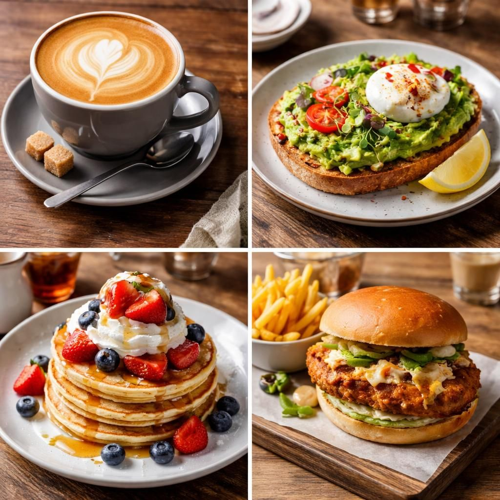

Informasi dan Tips-tips Seputar Kuliner

Berikut adalah info & tips-tips singkat seputar kuliner:
💡 Jajan diluar seringkali membawa manfaat, selain bisa mencicipi berbagai hidangan dengan tidak repot, kita juga tidak perlu mengeluarkan banyak uang demi macam-macam bahan hanya untuk satu jenis masakan favorit. Namun tentu saja perlu disesuaikan dengan keadaan ekonomi kita, jangan sampai kalau misalnya penghasilan hanya sekian tapi memilih restoran bintang lima.
📍 Yang perlu diingat adalah, jika Anda tidak menyukai suatu jenis masakan karena kurang cocok, misalnya: soto, ketoprak, jangan langsung menilai bahwa semuanya seperti itu. Karena, kadang ditempat lain tersedia jenis masakan yang sama, namun rasanya jauh berbeda, dan sesuai selera.
🧄 Bumbu/resep bisa diadaptasi sesuai selera masyarakat setempat. Lain halnya jika suatu warung/restoran hanya menyediakan menu otentik, maka rasa aslinya memang seperti itu, tidak beradaptasi dengan selera setempat.
🔬 Selain budget dan selera, perlu dipertimbangkan juga segi ke-higienisannya, selalu memilih warung makan yang bersih. Dan perlu juga membawa sendok, garpu, atau sumpit sendiri dari rumah, ini lebih higienis daripada mengandalkan yang ada di rumah makan atau restoran. Carilah model sendok/garpu yang lain dari biasanya. Kalau khawatir mengotori, cucilah di wastafel. Langkah ini juga bisa mencegah atau mengurangi dampak penularan virus.
🎗️ Jika Anda memilih memasak sendiri dirumah, itu juga baik. Masak sendiri bisa berkreasi, menjadikan resep biasa menjadi luar biasa. Yang perlu diperhatikan biasanya masalah selera. Ingat, Anda memasak tidak hanya untuk Anda sendiri, tapi buat sekeluarga. Sesuaikan dengan selera mereka, atau kalau perlu buatlah dua versi masakan yang berbeda. Jangan sampai masakan yang telah Anda masak dengan sungguh-sungguh hanya dibuang tidak termakan.
💵 Jika Anda mempunyai kemampuan lebih, dan kreasi masakan Anda disukai, maka hal ini bisa menjadi peluang untuk menjalankan usaha.
🕌 Karunia Allah SwT. sangat luas, dan tidak melarang hamba-hamba-Nya mencari rezeki dan karunia-Nya. Namun jangan boros, dan jangan pelit kepada sesama yang tidak mampu.